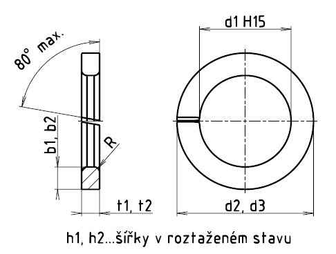

Příklad označení pružné podložky z oceli 14 260 se čtvercovým průřezem pro šroub M20, s čistým povrchem
PODLOŽKA ČSN 02 1740.11–20
Příklad označení pružné podložky z oceli 14 260 se obdélníkovým průřezem pro šroub M20, s čistým povrchem
PODLOŽKA ČSN 02 1741.11–20
1 Rozměry v závorkách nejsou doporučené.
2 Význam první doplňkové číslice za číslem rozměrové normy
0 ocel 12 061 nebo 12 071
1 ocel 14 260
9 podle zvláštního ujednání
3 Význam první doplňkové číslice za číslem rozměrové normy
0 bez úpravy povrchu
1 čistý povrch
2 černění
3 fosfátování
4 kadmiování
5 zinkování
6 niklování
8 chromování
9 dle zvláštního ujednání
4 Podložky se čtvercovým průřezem (ČSN 02 1740) jsou určeny pro pojištění šroubů s šestihrannou hlavou a šestihranných matic se zmenšeným šestihranem, pro pojištění šroubů s válcovou hlavou s drážkou nebo s vnitřním šestihranem, zvláště tam, kde se hlava zapouští do zahloubení.
5 Podložky s obdélníkovým průřezem (ČSN 02 1741) jsou určeny pro pojištění šroubů s šestihrannou hlavou a šestihranných matic s normálním šestihranem.
| Šroub d |
Společné | ČSN 02 1740 | ČSN 02 1741 | ||||||||
|---|---|---|---|---|---|---|---|---|---|---|---|
| d1 | R | d2 | b1=t1 | h1 | Hmotnost [g] |
d3 | b2 | t2 | h2 | Hmotnost [g] |
|
| M3 | 3,1 | 0,2 | 5,1 | 1 ±0,15 | 2 -0,4 | 0,101 | 5,7 | 1,3 ±0,1 | 0,8 ±0,1 | 1,6 -0,32 | 0,113 |
| M3,5 | (3,6) | 0,2 | 5,6 | 1 ±0,15 | 2 -0,4 | 0,113 | 6,2 | 1,3 ±0,1 | 0,8 ±0,1 | 1,6 -0,32 | 0,123 |
| M4 | 4,1 | 0,2 | 6,5 | 1,2 ±0,15 | 2,4 -0,48 | 0,183 | 7,1 | 1,5 ±0,1 | 0,9 ±0,1 | 1,8 -0,36 | 0,186 |
| M5 | 5,1 | 0,3 | 8,1 | 1,5 ±0,15 | 3 -0,6 | 0,366 | 8,7 | 1,8 ±0,1 | 1,2 ±0,1 | 2,4 -0,48 | 0,368 |
| M6 | 6,1 | 0,4 | 9,1 | 1,5 ±0,15 | 3 -0,6 | 0,422 | 11,1 | 2,5 ±0,15 | 1,6 ±0,1 | 3,2 -0,64 | 0,848 |
| M7 | (7,2) | 0,5 | 11,2 | 2 ±0,15 | 4 -0,8 | 0,908 | 13,2 | 3 ±0,15 | 2 ±0,1 | 4 -0,8 | 1,51 |
| M8 | 8,2 | 0,5 | 12,2 | 2 ±0,15 | 4 -0,8 | 1,01 | 14,2 | 3 ±0,15 | 2 ±0,1 | 4 -0,8 | 1,66 |
| M10 | 10,2 | 0,6 | 15,2 | 2 ±0,15 | 5 -1 | 1,96 | 17,2 | 3,5 ±0,2 | 2,5 ±0,15 | 4,4 -0,88 | 2,6 |
| M12 | 12,2 | 0,6 | 17,2 | 2,5 ±0,15 | 5 -1 | 2,27 | 20,2 | 4 ±0,2 | 2,5 ±0,15 | 5 -1 | 4 |
| M14 | (14,2) | 0,8 | 20,6 | 3,2 ±0,2 | 6,4 -1,28 | 4,39 | 23,2 | 4,5 ±0,2 | 3 ±0,15 | 6 -1,2 | 6,23 |
| M16 | 16,3 | 0,9 | 23,3 | 3,5 ±0,2 | 7 -1,4 | 5,98 | 26,3 | 5 ±0,2 | 3,5 ±0,2 | 7 -1,4 | 9,19 |
| M18 | (18,3) | 0,9 | 25,3 | 3,5 ±0,2 | 7 -1,4 | 6,59 | 28,3 | 5 ±0,2 | 3,5 ±0,2 | 7 -1,4 | 10,1 |
| M20 | 20,5 | 1,0 | 29,5 | 4,5 ±0,2 | 9 -1,8 | 12,5 | 32,5 | 6 ±0,2 | 4 ±0,2 | 8 -1,6 | 15,7 |
| M22 | (22,5) | 1,0 | 31,5 | 4,5 ±0,2 | 9 -1,8 | 13,5 | 34,5 | 6 ±0,2 | 4 ±0,2 | 8 -1,6 | 16,9 |
| M24 | 24,5 | 1,0 | 31,5 | 5,5 ±0,2 | 11 -2,2 | 22,4 | 38,5 | 7 ±0,25 | 5 ±0,2 | 10 -2 | 27,2 |
| M27 | (27,5) | 1,2 | 39,5 | 6 ±0,2 | 12 -2,4 | 29,7 | 41,5 | 7 ±0,25 | 5 ±0,2 | 10 -2 | 29,8 |
| M30 | 30,5 | 1,2 | 42,5 | 6 ±0,2 | 12 -2,4 | 32,4 | 46,5 | 8 ±0,25 | 6 ±0,2 | 12 -2,4 | 45,6 |
| M33 | (33,5) | 1,2 | 45,5 | 6 ±0,2 | 12 -2,4 | 35,1 | 53,5 | 10 ±0,25 | 6 ±0,2 | 12 -2,4 | 64,4 |
| M36 | 36,5 | 1,6 | 50,5 | 7 ±0,25 | 14 -2,8 | 52,6 | 56,5 | 10 ±0,25 | 6 ±0,2 | 12 -2,4 | 68,8 |
| M39 | (39,5) | 1,6 | 55,5 | 8 ±0,25 | 16 -3,2 | 75 | 59,5 | 10 ±0,25 | 6 ±0,2 | 12 -2,4 | 73,2 |
| M42 | 42,5 | 1,6 | 58,5 | 8 ±0,25 | 16 -3,2 | 80 | – | – | – | – | – |